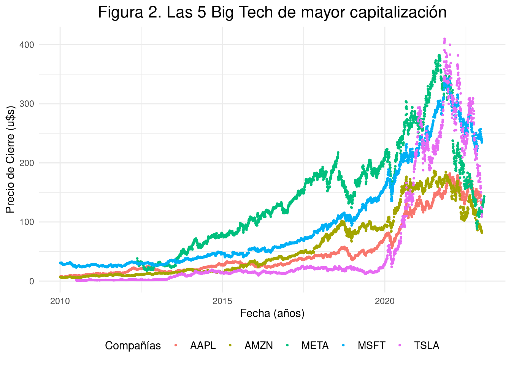
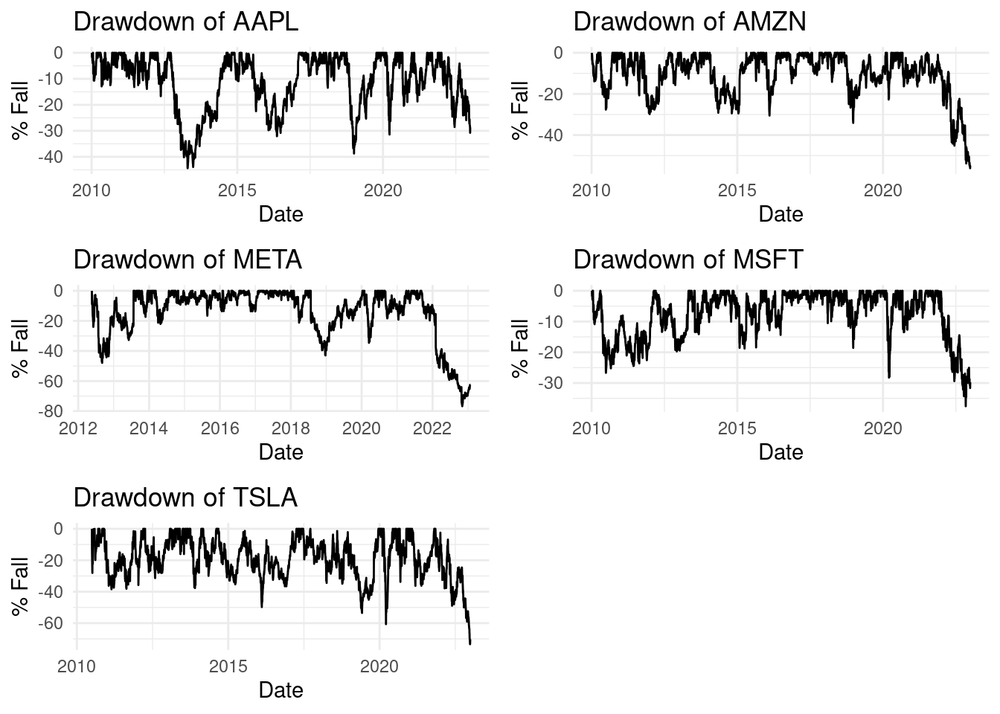

Big Tech Stock Price Analysis
Summary
In this analysis, we examine the price trends of the five main technology companies with the largest market capitalization: Apple (AAPL), Amazon (AMZN), Meta (META), Microsoft (MSFT), and Tesla (TSLA). Additionally, we evaluate the correlation of these movements with the S&P 500 index and other relevant assets such as BTC, WTI and Brent oil, NASDAQ index, and gold. Preliminary conclusions are presented on the magnitude of depreciations and the correlation between the stocks of the selected companies and other assets.
Prices
In recent years, large publicly traded technology companies have seen considerable declines in their stock prices, making it interesting to delve deeper into this topic. For this purpose, price data for the 14 most important technology companies listed on the US stock exchange have been downloaded. One of the questions we could try to answer is how large the magnitude of the depreciations has been. To do this, we have examined the price trends of the five main and most important companies. Only those companies with the largest market capitalization were considered, and which, a priori, show significant declines in the price charts to make the analysis simpler; Figure 1 and Figure 2 illustrate this.
As can be seen in the upper graph, the top 5 by market capitalization are TSLA, META, AAPL, AMZN, MSFT. These data provide a detailed view of the evolution of closing prices over time. A significant drop in the prices of several of these companies can be seen in Figure 2, which leads us to a slightly more detailed exploration of the data to assess the magnitude of the falls.

One way to see the magnitude of stock depreciation, as well as how long they last, is through "drawdown" graphs that also allow us to identify the periods in which the largest drops occur. Figure 3 shows the set of "drawdown" graphs for each of these 5 companies. It can be highlighted that the falls occur over prolonged time intervals, usually several months, and it can also be noted that the intensity is considerable. This provides valuable information as a precedent and for future considerations. This type of graph can show the most significant decreases from the historical highs reached in the stock prices of each company to the consequent local lows, but it also shows us, at least visually, that they have some correlation. We can see this markedly at the end of the graph where all see their price fall widely.

Table 1 presents the maximum fall percentages for each symbol over the entire evaluated time period, offering a quantitative view of the most significant losses experienced by the selected companies. This data is essential to understand the magnitude and impact on their valuation.
| Symbol | MaxDrawdown | |
|---|---|---|
| 3 | META | -76.73609 |
| 5 | TSLA | -73.38830 |
| 2 | AMZN | -56.14526 |
| 1 | AAPL | -44.37687 |
| 4 | MSFT | -37.55647 |
For example, META experienced a significantly more pronounced maximum fall compared to the rest, reaching an impressive -76.7360915%, taking first place. Then, with a maximum fall of -73.3882973% in second place, followed by AMZN with -56.1452632%, AAPL with -44.3768716%, and finally MSFT with -37.556466%. Now that we have seen the levels of decline, another question we could try to answer is how these falls affect the S&P 500 index. The weight of these 5 companies within the S&P 500 is well known, and some analysts claim that they are the ones that condition the price of the index [1] [2] [3], so we will probably see a strong correlation, but let's see what happens with respect to other assets as well and the correlation that the prices of these 5 stocks have among themselves. Let's take, then, the price of the S&P 500 in the evaluated interval and the prices of some other assets that have an important weight in the US and global economy, such as BTC, WTI and BRENT oil, the NASDAQ index and GOLD. Beyond the weight of these companies in the S&P 500 index, it should be clarified that correlation does not imply causality, so the fact that the price of one is falling does not imply that the other asset falls as well and vice versa, but it gives us a general idea.
[1] "BTC-USD" "GC=F" "CL=F" "BZ=F" "IXIC" "GSPC" 
It can be observed in the correlation matrix that crude oils, WTI and Brent, have a strong correlation with each other, but not with the rest. Meta's results are not good, so they should not be taken into account; the same occurs with Amazon with respect to the majority, but it shows strong correlation with Tesla, Apple and Microsoft. The S&P 500 index has a very strong correlation with the rest, with respect to the companies we are looking at, it can be said with all of them, but with Meta and Amazon the p-values are not conclusive, which is what the cross indicates. One way to deepen the analysis would be with regression models or comparing against specific indices.
Conclusions
We have seen both the magnitude of the depreciation of the stocks of the most important tech companies listed on the US stock exchange and the strong correlation they have with the S&P 500 index. An attempt was made to evaluate their correlation with different financial assets, which are a reference of activity and health of an economy. A strong correlation could be determined among the evaluated companies Tesla, Apple, Microsoft and Amazon, except for Meta where the results are not conclusive. Regarding the rest of the selected assets, it can only be assured that they show correlation with the S&P 500 index. It is necessary to use other tools that help deepen the analysis.
References
- Bloomberg. "Tech Titans' Dominance in S&P 500: An Analysis of Market Impact." https://www.bloomberg.com.
- S&P Dow Jones Indices. "S&P 500 Composition and Impact of Leading Tech Companies." https://us.spindices.com/.
- Financial Times. "The Influence of Big Tech on S&P 500 Performance." https://www.ft.com.